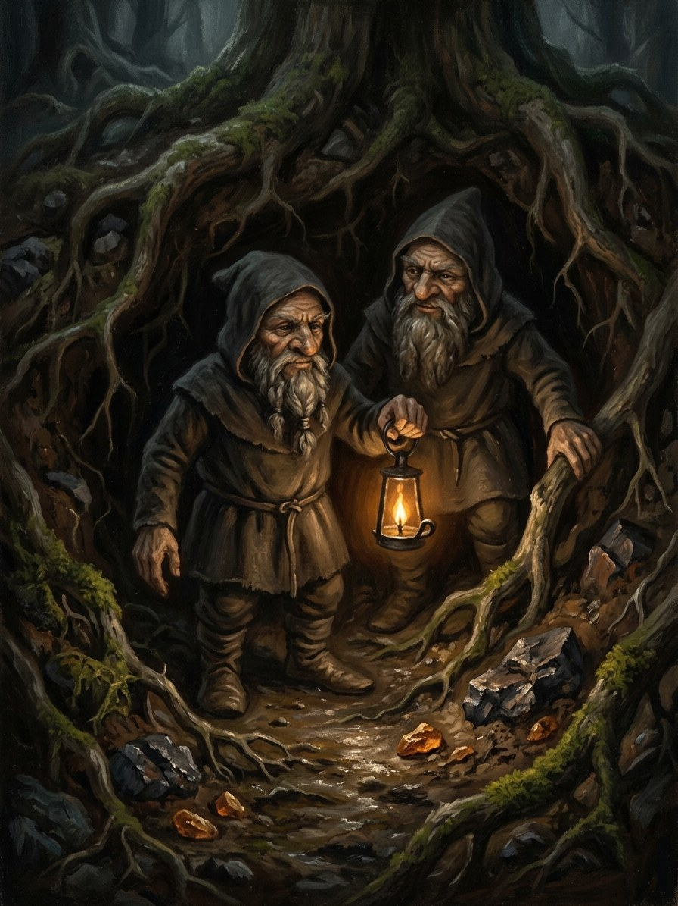

Barstukai (under-elder miners)¶
Folk source [Historical record]¶
Small underground beings attested in 16th-century accounts of Prussian and Samogitian belief. In the Prussian material they serve an earth-god, Puškaitis, who lives beneath the elder bush (šeivamedis), and people left bread and beer under the elder for them. Whether they are the same beings as kaukai or barzdukai, or whether the words are even related, is debated; regional variants differ.
Barstukai (under-elder miners)

Barstukai (under-elder miners) · creature¶
Tipas |
būtybė |
Status |
Sagos išmonė |
Pastaba |
Bestiary §4. Danger I → III. |
In the saga (where the folk are half-wrong)¶
Not house-spirits at all: the Root-Mother’s diggers, miners of bog-ore and buried amber in the roots of elder thickets and under hill-forts. They hate smelted iron and the plough, but they trade: bog-iron for bread, amber for beer, a safe path for a promise. Every old-school smith had a barstukas bargain, and the vilkatai’s bog-iron comes from them. A kaukas is your dead; a barstukas is nobody’s.
Signs & habitat¶
Elder thickets on old hill-forts and by bogs; lumps of bog-iron left on a stump; hammering underground at night.
Before / after the Unbinding¶
Before: honest traders. After 1387 the Order and then Polish and Lithuanian lords drain and mine the land by the furlong, and the barstukai stop trading and begin to collapse wells and mine-shafts.
Banes, wards, bargains, and their cost¶
Bread and beer under the elder at dusk, never watched (watching ends the bargain for the whole family). Never cut an elder without asking three times (the ground under your house goes hollow). Smith’s iron drives them down; feast-day iron kills them, and with it your bog-iron.
Danger level¶
I nuisance → III dangerous.
Story hooks¶
Book III: barstukai helping Samogitians tunnel under an Order stockade. Book IV: a Kraków mining venture in Podlasie collapses and the survivors swear the earth spoke.
Ryšiai
Servant of: Šaknų Motina (Root-Mother) — Her diggers of bog-ore and amber.
Origin [Historical record] small under-elder beings of Puškaitis, attested in 16th-century Prussian and Samogitian accounts; link to kaukai debated · [The saga's invention] the Root-Mother's diggers
Tier Dvasia · the Root-Mother's servants
Danger I nuisance → III dangerous after 1387
Habitat Elder thickets on old hill-forts and by bogs; the dark under hill-forts
Wants Bread and beer under the elder at dusk, never watched
Takes Wells and mine-shafts, after 1387, from lords who drain and mine the land
Signs Lumps of bog-iron left on a stump; hammering underground at night
Banes Smith's iron drives them down; feast-day iron kills them
Half-wrong truth. The folk mix them up with kaukai, which is half right: both are small and live in earth. But a kaukas is your dead, and a barstukas is nobody's.
Traders. Bog-iron for bread, amber for beer, a safe path for a promise. The vilkatai's bog-iron comes from them.
Dig. Mine bog-ore and buried amber in the roots of elder thickets.
Collapse (after 1387). Stop trading and bring down wells and shafts under drainers and miners.
Watching. Watching the offering ends the bargain for the whole family.
Cutting an elder. Ask three times, or the ground under your house goes hollow.
Iron. Smith's iron sends them down, and your bog-iron with them.
Sąsajos¶
graph LR
barstukai["Barstukai (under-elder miners)"]
root_mother["Šaknų Motina (Root-Mother)"]
barstukai -->|Servant of| root_mother
style barstukai stroke-width:3px